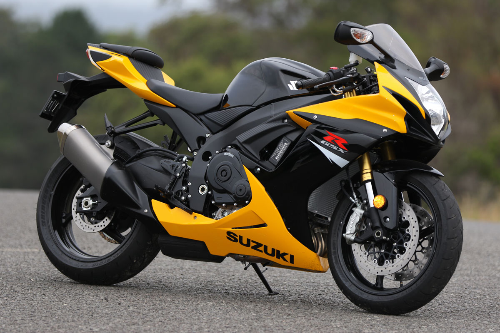

The Suzuki SV650

| Specification Name | Specification Value | |
| Max Speed | 8500rpm | |
| Engine Displacement | 645cc | |
| Emission Type | bs6 | |
| stroke | 62.6mm | |
| Bore | 81mm |
The Suzuki SV650 is another of those Suzuki bikes that have been instantly liked by all. This easy machine with its middleweight reliable feel is popular with all riders, even the inexperienced ones. For those who know their mean machines, the SV650 can be a treat to ride. The 645cc V-twin, liquid-cooled engine gives you a horsepower of 69 with 44.2 pound-feet of torque. Get to 60 mph in just over 3.2 seconds and feel the wind blow over your face. This machine can handle anything you give it. With a great price tag, the Suzuki SV650 is something that every new rider can own.
The Suzuki Boulevard

| Specification Name | Specification Value | |
| Max Speed | 4000rpm | |
| Engine Displacement | 805cc | |
| Compression Ratio | bs6 | |
| stroke | 74.4mm | |
| Bore | 83mm |
The Suzuki Boulevard C90 is one engine that is loved by all Suzuki fanatics. This long machine with low-level, but stylish looks is a great cruiser. The Boulevard C90 has a 1,462 cc V-twin engine with a 67 horsepower and 84 pound-feet of torque. This machine gets the fuel-injection just like the GSX-R machines. A motorcycle with such great looks is sure to impress the guys and the girls. The Suzuki Boulevard C90 surely earns its spot in the top ten for being most consistent and powerful while looking great. Check out the Boulevard to see for yourself the great iconic machine.
The Suzuki GSX-R750
| Specification Name | Specification Value | |
| Max Speed | 12800rpm | |
| Engine Displacement | 749.7cc | |
| Compression Ratio | bs6 | |
| stroke | 48.7mm | |
| Bore | 70mm |
One of the most recognizable Suzuki motorcycles that have been around for many years, the GSX-R750 is a pride to own. With great performance features coupled with a lightweight feel and great-quality parts, the GSX-R750 comes at an affordable price. From the time it was introduced in 1985, this motorcycle has been in the market and constantly upgraded too. The latest version was made in 2011 and still continues to this day. It has a superior engine with 127.9 horsepower and 55.7 pound-feet of torque at the rear wheel. The lightweight body is just about 428 pounds and has a sleek design.